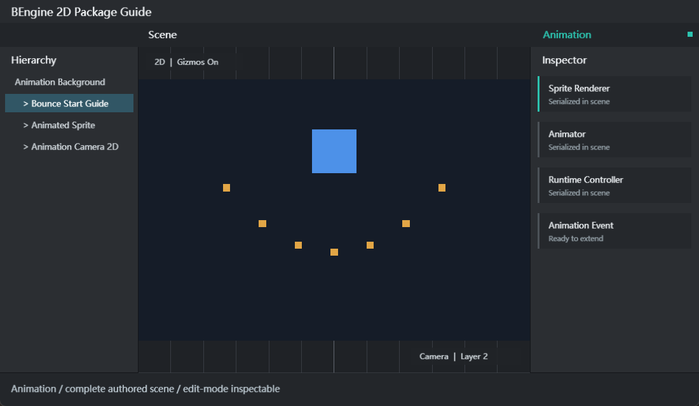

确定性数据
时间、值和切线使用 Fix64，Clip 与 Controller 使用可审查的 YAML 文档。
DETERMINISTIC 2D ANIMATION
Animation 包提供 Fix64 曲线、Clip、事件、单 Clip 播放组件，以及由参数、状态、条件和过渡构成的 Animator Controller。
时间、值和切线使用 Fix64，Clip 与 Controller 使用可审查的 YAML 文档。
支持 Transform 的 X/Y、标量旋转，以及自定义组件上的可写 Fix64/int 成员。
Animation 直接播放一个 Clip；Animator 根据参数、条件和退出时间选择 State。
AnimationRuntimeSystem 通过包 DI 模块注册，在单线程 Scene Update 中以 order 50 执行。

| 项目 | 值 | 说明 |
|---|---|---|
| 包 ID | com.bengine.animation | 用于工程包清单与 Runtime Package State |
| 运行时程序集 | BEngine.Animation | 组件、曲线、资源和 Scene System |
| 编辑器程序集 | BEngine.Animation.Editor | 编辑器侧包边界 |
| 依赖 | BEngine | 不依赖 Physics2D、Navigation2D 或 UIElements |
| 资源后缀 | .anim.yaml, .controller.yaml | 由 Document Converter 验证和保存 |
BEngine.Animation；包禁用前移除 Scene 中的 Animation 类型引用。| 示例 | 导入目录 | 场景 | 输入与学习点 |
|---|---|---|---|
| Animation Getting Started | Assets/Examples/AnimationGettingStarted | res/Animation.scene.yaml | Space 暂停；Up/Down 调速；曲线与事件 |
| Animator State Machine | Assets/Examples/StateMachine | res/StateMachine.scene.yaml | Space 切换 Spin；Enter 触发 Pulse；Bool/Trigger 过渡 |
Assets/Examples/.../res/*.scene.yaml。| 组件 | 字段 | 说明 |
|---|---|---|
| Animation | clipPath | AnimationClip 的 Assets/Packages 路径 |
| Animation | playAutomatically | Update 首次执行时自动 Play |
| Animation | isPlaying | 只读运行状态 |
| Animator | controllerPath | 持久 AnimatorController 路径 |
| Animator | runtimeAnimatorController | 仅运行时直接引用，不在 Inspector 显示 |
| Animator | speed | 全局速度，与 State speed 相乘 |
| Animator | playOnAwake | 自动进入 defaultState |
| Animator | applyRootMotion | 兼容字段；当前没有独立 Root Motion 求解 |
| Animator | currentStateName/normalizedTime | 只读状态调试信息 |
两个组件都禁止在同一 GameObject 上重复添加，Add Component 路径分别为 Animation/Animation 与 Animation/Animator。
| 类型 | 字段 | 说明 |
|---|---|---|
| AnimationClip | frameRate/wrapMode/legacy | 帧率信息、包装方式和兼容标记 |
| AnimationClip | bindings/events | 曲线绑定和按时间排序的事件 |
| AnimationBinding | relativePath/componentType/propertyName | 从动画根定位 GameObject、组件和成员 |
| AnimationCurve | keys/preWrapMode/postWrapMode | Keyframe 与范围外求值 |
| Keyframe | time/value/inTangent/outTangent | Fix64 关键帧数据 |
| AnimationEvent | time/functionName | 对同一 GameObject 的启用 MonoBehaviour 发送消息 |
| AnimatorController | defaultState/parameters/states | 状态机根数据 |
| AnimatorState | clipPath/speed/loop/transitions | 状态 Clip、速度和出边 |
| AnimatorTransition | destinationState/hasExitTime/exitTime/duration | 目标与退出配置；duration 暂不混合 |
| AnimatorCondition | parameter/mode/threshold | If、IfNot、Greater、Less、Equals、NotEqual |
localPosition.x/y、localRotation、localScale.x/y。relativePath 为空表示动画根，非空时按子对象名称和 `/` 逐级查找。| API | 用途 |
|---|---|
Animation.Play/Stop | 从头播放或停止单 Clip |
AnimationCurve.AddKey/MoveKey/RemoveKey/Evaluate | 构建与求值曲线 |
AnimationCurve.Linear | 创建线性曲线 |
AnimationClip.SetCurve | 新增、替换；传 null 删除绑定 |
AnimationClip.AddEvent/SampleAnimation | 添加事件或立即采样 |
Animator.Play/CrossFade/HasState | 状态控制；CrossFade 当前直接切换 |
SetFloat/Integer/Bool/Trigger | 写入状态机参数 |
GetFloat/Integer/Bool/ResetTrigger | 读取或清除参数 |
AnimationClip.Save/Load | 保存和加载 `.anim.yaml` |
AnimatorController.Save/Load | 保存和加载 `.controller.yaml` |
using BEngine;
using BEngine.Animation;
public sealed class BounceOnStart : MonoBehaviour
{
public override void Start()
{
var clip = new AnimationClip
{ frameRate = 30, wrapMode = WrapMode.Loop };
clip.SetCurve("", typeof(Transform), "localPosition.y",
new AnimationCurve(
new Keyframe(0, 0),
new Keyframe(1, 2),
new Keyframe(2, 0)));
clip.AddEvent(new AnimationEvent
{ time = 1, functionName = nameof(OnPeak) });
var controller = new AnimatorController
{ defaultState = "Bounce" };
controller.AddState(new AnimatorState
{ name = "Bounce", clip = clip, loop = true });
var animator = gameObject.AddComponent<Animator>();
animator.runtimeAnimatorController = controller;
animator.Play("Bounce");
}
private void OnPeak(AnimationEvent value) =>
Debug.Log("Animation peak");
}| 入口/API | 结果 |
|---|---|
| Assets > Create > Animation > Animation Clip | 创建 `New Animation.anim.yaml` |
| Assets > Create > Animation > Animator Controller | 创建 `.controller.yaml` |
| Add Component > Animation/Animation | 添加单 Clip 组件 |
| Add Component > Animation/Animator | 添加状态机组件 |
AssetDatabase.LoadAssetAtPath<AnimationClip> | 编辑器加载资源 |
EditorUtility.SetDirty + AssetDatabase.SaveAssets | 保存编辑态工具修改 |
DocumentConversionRegistry | 包内部在模块初始化时注册 Clip/Controller converter |
采样器可写入自定义组件的公开或可反射写入的 Fix64/int 成员。组件通过 [AddComponentMenu] 自动注册，绑定使用完整组件类型和成员名。
using BEngine;
using BEngine.Animation;
[AddComponentMenu("Gameplay/Pulse Target")]
public sealed class PulseTarget : MonoBehaviour
{
public Fix64 intensity { get; set; }
public override void Start()
{
var clip = new AnimationClip { wrapMode = WrapMode.Loop };
clip.SetCurve("", typeof(PulseTarget), nameof(intensity),
AnimationCurve.Linear(0, 0, 1, 1));
clip.SampleAnimation(gameObject, Fix64.Half);
Debug.Log($"Intensity = {intensity}");
}
}自定义动画资源格式可在运行时程序集实现 `DocumentConverter<TDocument,TObject>`，由模块初始化器调用 `DocumentConversionRegistry.Register` 和 `DocumentValidationRegistry.Register`。Editor 文件型资源再通过 `AssetTypeRegistry.Register<TAsset>` 绑定后缀、loader 与图标。
| 现象 | 检查与处理 |
|---|---|
| 找不到组件 | 启用包、等待编译、检查 asmdef 是否引用 BEngine.Animation |
| Play 没有动画 | 组件 enabled、对象 active、路径、defaultState、playOnAwake |
| 资源路径失败 | 使用 Assets/Packages 稳定路径及完整 `.anim.yaml`/`.controller.yaml` 后缀 |
| 曲线不生效 | relativePath、componentType、成员名、Fix64/int 可写类型 |
| 事件不触发 | 方法位于同一对象启用 MonoBehaviour，可接收 AnimationEvent 或无参数 |
| Trigger 不切换 | Controller 声明同名 Trigger 参数，Transition 条件名称完全一致 |
| CrossFade 没混合 | 当前实现等价于 Play，duration 尚未参与插值 |
| IsInTransition 始终 false | 当前不维护混合阶段，是已知限制 |
| 停止 Play 后修改丢失 | Play 使用镜像；资源编辑和保存必须在 Edit Mode 完成 |